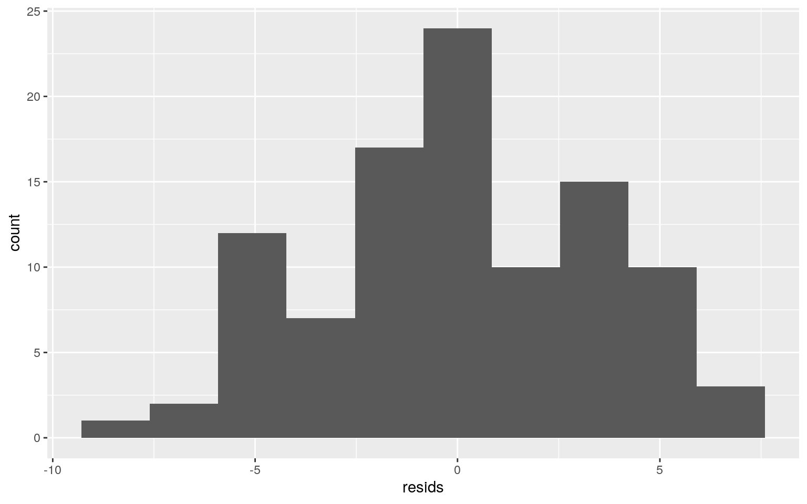

For this project, I decided to choose a more lighthearted dataset to analyze This dataset contains nine morphometric measurements of 101 mountain brushtail possums trapped at seven different sites across Austrailia. More information on my data can be found at https://vincentarelbundock.github.io/Rdatasets/datasets.html. My dataset includes 13 different variables. The ones I will be focusing on are the sex, site, total length, tail length, age, and belly girth.
I will be performing a MANOVA to determine the effect of capture site on the total length, age, belly girth, and tail length of a possum.
#First, we run the assumptions of the MANOVA to determine whether the data is fit to run a MANOVA on.
#Multivariate normality for each group
#install.packages("rstatix")
library(rstatix)
group <- possum$site
DVs <- possum %>% select(age, hdlngth, taill, belly)
#Test multivariate normality for each group (null: assumption met)
sapply(split(DVs,group), mshapiro_test)## 1 2 3 4 5 6 7
## statistic 0.9238589 0.7241401 0.5380681 0.7147501
0.9268888 0.7827513 0.8491452
## p.value 0.02346723 0.001729343 4.909609e-05 0.005359159
0.3101557 0.00428361 0.00821013#All but one of my sites showed a p value of greater than 0.05, so my data does *not* meet the requirements for the MANOVA. If my data were to have passed the Shapiro-Wilk test of normality, then I would move on to test for homogeny of covariance matrices using Box's M-test to test for equal variance for each DV within each group and equal covariance between any two DVs. #I went ahead and performed the MANOVA anyway, but keep in mind that my data does not meet the assumptions for MANOVA and therefore, this is not the appropriate test to run on my data.
#I decided to use a subset of the available numeric variables in my dataset to minimize the amount of T tests I perform. This way, I will not decrease the significance level as drastically as if I used all of the variables. So I am only going to look at the variables I am most interested in, which are age, total length, belly girth, and tail length.
man1<-manova(cbind(age, totlngth, taill, belly)~site, data=possum)
summary(man1)## Df Pillai approx F num Df den Df Pr(>F)
## site 1 0.53 27.064 4 96 4.82e-15 ***
## Residuals 99
## ---
## Signif. codes: 0 '***' 0.001 '**' 0.01 '*' 0.05 '.' 0.1
' ' 1#The results are significant (p = 4.82e-15), so I run each of the one way ANOVAs
summary.aov(man1)## Response age :
## Df Sum Sq Mean Sq F value Pr(>F)
## site 1 5.98 5.9802 1.6409 0.2032
## Residuals 99 360.81 3.6446
##
## Response totlngth :
## Df Sum Sq Mean Sq F value Pr(>F)
## site 1 163.46 163.46 10.128 0.001952 **
## Residuals 99 1597.85 16.14
## ---
## Signif. codes: 0 '***' 0.001 '**' 0.01 '*' 0.05 '.' 0.1
' ' 1
##
## Response taill :
## Df Sum Sq Mean Sq F value Pr(>F)
## site 1 53.82 53.816 15.907 0.0001275 ***
## Residuals 99 334.94 3.383
## ---
## Signif. codes: 0 '***' 0.001 '**' 0.01 '*' 0.05 '.' 0.1
' ' 1
##
## Response belly :
## Df Sum Sq Mean Sq F value Pr(>F)
## site 1 28.31 28.3056 3.9151 0.05063 .
## Residuals 99 715.75 7.2298
## ---
## Signif. codes: 0 '***' 0.001 '**' 0.01 '*' 0.05 '.' 0.1
' ' 1#From here, we can tell that only the total length (p = 0.001952), and tail length (p = 0.0001275) vary significantly by site.
possum%>%group_by(site)%>%summarize(mean(totlngth),mean(taill))## # A tibble: 7 x 3
## site `mean(totlngth)` `mean(taill)`
## <dbl> <dbl> <dbl>
## 1 1 89.7 36.4
## 2 2 82 34.6
## 3 3 88.1 37.2
## 4 4 92.2 39.7
## 5 5 86.9 37.7
## 6 6 84.5 37.7
## 7 7 85.7 37.7#Next, we do four pairwise T tests to determine exactly which sites differ significantly for total length and tail length.
pairwise.t.test(possum$totlngth, possum$site, p.adj = "none")##
## Pairwise comparisons using t tests with pooled SD
##
## data: possum$totlngth and possum$site
##
## 1 2 3 4 5 6
## 2 1.8e-09 - - - - -
## 3 0.22178 0.00022 - - - -
## 4 0.06087 4.1e-09 0.01680 - - -
## 5 0.00926 0.00043 0.44670 0.00062 - -
## 6 3.5e-06 0.06284 0.02082 1.6e-06 0.06096 -
## 7 4.5e-05 0.00435 0.09931 1.4e-05 0.29503 0.32435
##
## P value adjustment method: nonepairwise.t.test(possum$taill, possum$site, p.adj = "none")##
## Pairwise comparisons using t tests with pooled SD
##
## data: possum$taill and possum$site
##
## 1 2 3 4 5 6
## 2 0.0023 - - - - -
## 3 0.2163 0.0012 - - - -
## 4 3.0e-06 3.9e-09 0.0046 - - -
## 5 0.0177 1.5e-05 0.5624 0.0077 - -
## 6 0.0177 1.5e-05 0.5624 0.0077 1.0000 -
## 7 0.0065 3.3e-06 0.5056 0.0060 0.9450 0.9450
##
## P value adjustment method: none#Count tests:
#1 MANOVA, 4 ANOVAs, and 42 Pairwise T tests
1 + 4 + 42## [1] 47#Bonferroni correction
0.05/47## [1] 0.00106383After the Bonferroni correction, sites 1 vs 2, 2 vs 3, 3 vs 4, 3 vs 5, 4 vs 5, 1 vs 6, 4 vs 6, 1 vs 7, and 4 vs 7 had a P value of < .00106 when comparing total length of the possums. After the Bonferroni correction, sites 1 vs 4, 2 vs 4, 2 vs 5, 2 vs 6, and 2 vs 7 had a P value of < .00106 when compairing tail length across the sites.
However, it is important to note again that my data did not pass the MANOVA assumptions, so these "significant" values are not really applicable.
I will be performing a mean difference randomization test to determine whether there is a significant difference in total length and tail length across each of the 7 sites.
Null Hypothesis: There is no significant difference between the foot length between male and female possums.
Alternative Hypothesis: There is a significant difference in the mean foot length between male and female possums.
#Tabulate the means for the raw data
possum %>% group_by(sex) %>% summarize(mean(footlgth))## # A tibble: 2 x 2
## sex `mean(footlgth)`
## <chr> <dbl>
## 1 f 69.1
## 2 m 67.9#Visualize the means for the raw data
#Here is the visualization for distribution of tail lengths, faceted by site
ggplot(possum,aes(footlgth,fill=sex))+geom_histogram(bins=6.5)+
facet_wrap(~sex,ncol=2)+theme(legend.position="none")#Now, make a randomized dataset
#This randomizes the total lengths by site
set.seed(1234)
rand_dist1<-vector()
for(i in 1:5000){
new1<-data.frame(footlgth=sample(possum$footlgth),sex=possum$sex)
rand_dist1[i]<-mean(new1[new1$sex=="m",]$footlgth)-
mean(new1[new1$sex=="f",]$footlgth)}
#Check to make sure this for loop works
head(rand_dist1)## [1] 1.5046812 -0.9856739 -0.9000807 -0.3131558
-1.7886199 0.2941485#Find the mean difference of the actual data to give us the cutoffs for the p value
possum%>%group_by(sex)%>%
summarize(means=mean(footlgth))%>%summarize(`mean_diff1`=diff(means))## # A tibble: 1 x 1
## mean_diff1
## <dbl>
## 1 -1.22#Plot randomized means and the cutoffs
{hist(rand_dist1,main="",ylab=""); abline(v = c(-1.291606 , 1.291606 ),col="red")}#Finally, calculate the p value
mean(rand_dist1> 1.291606 | rand_dist1 < -1.291606) ## [1] 0.149After completing the distribution plots for the foot length of the possums, faceted by sex, my test looked promising. However, after completing my randomization test, it looks as though the probability of getting the same mean difference between the foot lengths of males vs females in either extreme is 0.145, which is not significant. This means I can conclude that foot length does not vary significantly betewen male and female possums used to generate this data.
Here, I am going to look at whether tail length and age can explain variation in total body length in possums.
#First, mean-center numeric variables
possum$age_c <- possum$age - mean(possum$age)
possum$taill_c <- possum$taill - mean(possum$taill)
#Run the prediction model using the two variables tail length and age, and their interaction.
fit<-lm(totlngth~sex+age_c+taill_c+age_c*taill_c, data= possum)
summary(fit)##
## Call:
## lm(formula = totlngth ~ sex + age_c + taill_c + age_c *
taill_c,
## data = possum)
##
## Residuals:
## Min 1Q Median 3Q Max
## -6.9578 -2.1744 -0.0404 2.0634 7.0094
##
## Coefficients:
## Estimate Std. Error t value Pr(>|t|)
## (Intercept) 88.08174 0.52564 167.571 < 2e-16 ***
## sexm -1.26220 0.68319 -1.848 0.0678 .
## age_c 0.43271 0.17552 2.465 0.0155 *
## taill_c 1.13620 0.17030 6.672 1.62e-09 ***
## age_c:taill_c -0.16711 0.09194 -1.818 0.0722 .
## ---
## Signif. codes: 0 '***' 0.001 '**' 0.01 '*' 0.05 '.' 0.1
' ' 1
##
## Residual standard error: 3.332 on 96 degrees of freedom
## Multiple R-squared: 0.3948, Adjusted R-squared: 0.3696
## F-statistic: 15.66 on 4 and 96 DF, p-value: 6.757e-10Intercept: My model tells me that when age and tail length both have values of zero, the total body length of the possum will be 88.08174 cm.
sex: controlling for tail length and age, the effect of being male decreases the body length by an average of 1.26 cm.
age: controlling for tail length and sex, for every single incremental increase in age, the body length of the possum increases by 0.433 cm.
tail length: controlling for age and sex, for every single incremental increase in tail length, the body length of the possum increases by 1.13cm.
interaction: when taking tail length into account, the effect of age on body size decreases by 0.167 cm.
#Plot the regression of tail length and sex
possum %>% summarize(mean(taill), mean(age))## # A tibble: 1 x 2
## `mean(taill)` `mean(age)`
## <dbl> <dbl>
## 1 37.0 3.82possum %>% ggplot(aes(taill, totlngth, color = sex)) +
geom_point() + geom_smooth(method = "lm") + geom_vline(xintercept = 37.0495)fit2<-lm(totlngth~+age+taill, data= possum)
#Plot the regression of tail length and age.
#Setup Axis
axis_x <- seq(min(possum$age), max(possum$age), by = .05)
axis_y <- seq(min(possum$taill), max(possum$taill), by = .05)
#Sample points
totlngth_surface <- expand.grid(age = axis_x, taill = axis_y, KEEP.OUT.ATTRS = F)
totlngth_surface$totlngth <- predict.lm(fit2, newdata = totlngth_surface)
mult_plot <- plot_ly(possum,
x = ~age,
y = ~taill,
z = ~totlngth,
type = "scatter3d",
mode = "markers")
mult_plot <- add_trace(p = mult_plot,
z = totlngth_surface,
x = axis_x,
y = axis_y,
type = "surface",
color="gray")
#Type mult_plot into consol to view.Check assumptions for linear regression
#Homoscedasticity
resids<-lm(totlngth~taill, data=possum)$residuals
fitted<-lm(totlngth~taill, data=possum)$fitted.values
ggplot()+geom_point(aes(fitted,resids))#We can see that the points look generally even across the entire plot and do not flare out#Normality
ggplot()+geom_histogram(aes(resids),bins=10)
par(mfrow=c(1,2)); hist(resids); qqnorm(resids); qqline(resids, col='red')#This also shows us that our residuals generally fit a normal distribution.
#normality does not look great, but it looks fairly good. #Linearity
breaks <- seq(min(possum$taill), max(possum$taill), len=8)
ggplot(possum, aes(taill, totlngth)) +
geom_point(alpha=.3) +
theme_bw()+
geom_vline(xintercept=breaks, lty=2,color='gray50')#The relationship between tail length and total length is generally linear. There is no strange curvature seen in our plot. #Robust standard errors
#install.packages("sandwich")
library(sandwich)
library(lmtest)
bptest(fit)##
## studentized Breusch-Pagan test
##
## data: fit
## BP = 6.0942, df = 4, p-value = 0.1922#This confirms that my data passes the homoscedastic assumption ( p = 0.1151)
#uncorrected SEs
summary(fit)$coef## Estimate Std. Error t value Pr(>|t|)
## (Intercept) 88.0817359 0.52563914 167.570734
2.919085e-120
## sexm -1.2622005 0.68318996 -1.847510 6.775270e-02
## age_c 0.4327115 0.17551958 2.465317 1.546511e-02
## taill_c 1.1362049 0.17030156 6.671724 1.618048e-09
## age_c:taill_c -0.1671141 0.09193948 -1.817653
7.223639e-02#corrected SE's
coeftest(fit, vcov = vcovHC(fit))##
## t test of coefficients:
##
## Estimate Std. Error t value Pr(>|t|)
## (Intercept) 88.081736 0.506747 173.8180 < 2.2e-16 ***
## sexm -1.262201 0.668007 -1.8895 0.06184 .
## age_c 0.432711 0.177167 2.4424 0.01642 *
## taill_c 1.136205 0.153274 7.4129 4.859e-11 ***
## age_c:taill_c -0.167114 0.084293 -1.9825 0.05028 .
## ---
## Signif. codes: 0 '***' 0.001 '**' 0.01 '*' 0.05 '.' 0.1
' ' 1summary(fit)##
## Call:
## lm(formula = totlngth ~ sex + age_c + taill_c + age_c *
taill_c,
## data = possum)
##
## Residuals:
## Min 1Q Median 3Q Max
## -6.9578 -2.1744 -0.0404 2.0634 7.0094
##
## Coefficients:
## Estimate Std. Error t value Pr(>|t|)
## (Intercept) 88.08174 0.52564 167.571 < 2e-16 ***
## sexm -1.26220 0.68319 -1.848 0.0678 .
## age_c 0.43271 0.17552 2.465 0.0155 *
## taill_c 1.13620 0.17030 6.672 1.62e-09 ***
## age_c:taill_c -0.16711 0.09194 -1.818 0.0722 .
## ---
## Signif. codes: 0 '***' 0.001 '**' 0.01 '*' 0.05 '.' 0.1
' ' 1
##
## Residual standard error: 3.332 on 96 degrees of freedom
## Multiple R-squared: 0.3948, Adjusted R-squared: 0.3696
## F-statistic: 15.66 on 4 and 96 DF, p-value: 6.757e-10After using recomputing the regression with the robust standard error correction, we can see that there is a very small difference in the standard error values, but both of my predictor variables become significant, meaning that controlling for the other, each predictor variable does significantly affect the total body length of the possum. The interaction between the two predictor variables remained insignificant. We can also conclude here that my model is able to explain 39.5% of the variation in body length using tail length and age. This R^2 value is slightly lower than it was with the original regression.
This is used to control for unmet normality assumptions.
#Bootstrap observations
set.seed(348)
boot_data <- data.frame()
# resampling data, repeat 5000 times
samp_obs <- replicate(5000, {
boot_data <- sample_frac(possum, replace = T)
fit3 <- lm(totlngth~sex+age_c+taill_c+age_c*taill_c, data = boot_data)
coef(fit3)
})
# Estimated SEs
samp_obs %>% t %>% as.data.frame %>% summarize_all(sd)## (Intercept) sexm age_c taill_c age_c:taill_c
## 1 0.492177 0.6476438 0.1713306 0.1557496 0.09006677We can see that by bootstrapping my observations, my SEs decreased slightly. This change is minimal because my data had already passed the normality assumption, so it didn't necessarily need to be corrected for. Between the robust SE's and my original SE's, the p value for my age_c variable decreased slightly and the one for my tail length_c value increased very slightly, but the significance remained the same. Taking into account the bootstrapped SE's, the SE's decrease slightly, and the p values increase very slightly, but the significance of each variable remains the same.
Here, I am going to generate a model to predict sex by chest girth and head length.
#recode m/f as f = 1, m = 0
data<-possum%>%mutate(y=ifelse(sex=="f",1,0))
head(data)## # A tibble: 6 x 16
## site Pop sex age hdlngth skullw totlngth taill footlgth
earconch eye chest belly age_c
## <dbl> <chr> <chr> <dbl> <dbl> <dbl> <dbl> <dbl> <dbl>
<dbl> <dbl> <dbl> <dbl> <dbl>
## 1 1 Vic m 8 94.1 60.4 89 36 74.5 54.5 15.2 28 36 4.18
## 2 1 Vic f 6 92.5 57.6 91.5 36.5 72.5 51.2 16 28.5 33
2.18
## 3 1 Vic f 6 94 60 95.5 39 75.4 51.9 15.5 30 34 2.18
## 4 1 Vic f 6 93.2 57.1 92 38 76.1 52.2 15.2 28 34 2.18
## 5 1 Vic f 2 91.5 56.3 85.5 36 71 53.2 15.1 28.5 33 -1.82
## 6 1 Vic f 1 93.1 54.8 90.5 35.5 73.2 53.6 14.2 30 32
-2.82
## # … with 2 more variables: taill_c <dbl>, y <dbl>#perform the logistic model
log_fit<-glm(y~hdlngth+chest,data=data,family=binomial(link="logit"))
coeftest(log_fit)##
## z test of coefficients:
##
## Estimate Std. Error z value Pr(>|z|)
## (Intercept) 8.706104 5.824440 1.4948 0.13498
## hdlngth -0.197341 0.082174 -2.4015 0.01633 *
## chest 0.340724 0.141170 2.4136 0.01580 *
## ---
## Signif. codes: 0 '***' 0.001 '**' 0.01 '*' 0.05 '.' 0.1
' ' 1exp(coef(log_fit))## (Intercept) hdlngth chest
## 6039.6684642 0.8209103 1.4059650From these results, we can see that controlling for the other, both head length and chest girth are significant predictors of sex. Controlling for chest girth, for every single unit change in head length, the odds of being female decrease by a factor of 0.8209103 (p = 0.01633), or by ~18%. Controlling for head length, for every single unit increase in chest girth, the odds of being female increase by a factor of 1.4059650 (p = 0.0158), or ~41%.
data$prob <- predict(log_fit)
data$pred <- ifelse(data$prob>0.5, 1, 0)
#Confusion Matrix
table(truth=data$y, prediction=data$pred) %>% addmargins## prediction
## truth 0 1 Sum
## 0 58 1 59
## 1 35 7 42
## Sum 93 8 101#Accuracy, Sensitivity (TPR), Specificity (TNR), Precision (PPV), and AUC
class_diag(data$pred,data$y)## acc sens spec ppv f1 auc
## 1 0.6435644 0.1666667 0.9830508 0.875 0.28 0.5748588From here, we can see that my model is able to explain just about 57% of the time, my model is able to correctly predict male vs. female. My true negative rate is really high (98%) and my precision is pretty high at 87%, and my accuracy is moderately performing at 64%, and my true positive rate is very low, at only 16%.
#Density plot of log-odds
data %>% ggplot(aes(prob, fill=sex))+geom_density(alpha=.3)+
geom_vline(xintercept=-0.3,lty=2)#ROC Curve
library(plotROC)
ROCplot<-ggplot(data)+geom_roc(aes(d=y,m=prob), n.cuts=0)
ROCplot#Compute AUC
calc_auc(ROCplot)## PANEL group AUC
## 1 1 -1 0.6698951My AUC value is, again, 67%. This means that my model does a pretty poor job of predicting sex based on head length and chest girth, because a truly random prediction would give an AUC value of 50%, and my AUC value is only slightly higher than that.
log_fit_all<-glm(y~age+totlngth+site+Pop+hdlngth+skullw+taill+footlgth+earconch+eye+chest+belly,data=data,family="binomial")
coeftest(log_fit_all)##
## z test of coefficients:
##
## Estimate Std. Error z value Pr(>|z|)
## (Intercept) 24.072641 10.606353 2.2696 0.02323 *
## age 0.080290 0.138858 0.5782 0.56312
## totlngth 0.151886 0.115283 1.3175 0.18767
## site -0.424196 0.281374 -1.5076 0.13166
## PopVic 1.175486 1.981689 0.5932 0.55306
## hdlngth -0.237592 0.135971 -1.7474 0.08057 .
## skullw -0.059651 0.125590 -0.4750 0.63481
## taill 0.147440 0.220216 0.6695 0.50316
## footlgth -0.075305 0.131493 -0.5727 0.56685
## earconch -0.200623 0.160261 -1.2519 0.21062
## eye -0.566807 0.273669 -2.0711 0.03835 *
## chest 0.112301 0.183134 0.6132 0.53973
## belly 0.097970 0.120846 0.8107 0.41754
## ---
## Signif. codes: 0 '***' 0.001 '**' 0.01 '*' 0.05 '.' 0.1
' ' 1exp(coef(log_fit_all))## (Intercept) age totlngth site PopVic hdlngth skullw
## 2.848492e+10 1.083601e+00 1.164028e+00 6.542957e-01
3.239717e+00 7.885242e-01 9.420934e-01
## taill footlgth earconch eye chest belly
## 1.158864e+00 9.274604e-01 8.182208e-01 5.673339e-01
1.118850e+00 1.102929e+00data$prob <- predict(log_fit_all)
data$pred <- ifelse(data$prob>0.5, 1, 0)
class_diag(data$pred,data$y)## acc sens spec ppv f1 auc
## 1 0.6534653 0.3809524 0.8474576 0.64 0.4776119 0.614205Here, we can see that from adding all of my explanatory variables, only one becomes significant for predicting sex. Controlling for all other variables, as eye size (distance from medial canthus to lateral canthus of right eye) increases by a single unit, the odds of being female decrease by a factor of 0.567. We can also see that the precision and accuracy have increased. The specificity decreased, but is still pretty promising. The sensitivity also increased, but is still pretty poor at 38%. We can also see that my AUC value actually increased from 55% to 61%, meaning using all of these variables actually helped my model's ability to predict sex.
#10-fold CV with all variables
data<-possum%>%mutate(y=ifelse(sex=="f",1,0))
set.seed(1234)
k=10
data<-data[sample(nrow(data)),]
folds<-cut(seq(1:nrow(data)),breaks=k,labels=F)
diags<-NULL
for(i in 1:k){
train<-data[folds!=i,]
test<-data[folds==i,]
truth<-test$y
fit<-glm(y~age+totlngth+site+Pop+hdlngth+skullw+taill+footlgth+earconch+eye+chest+belly,data=train,family="binomial")
probs<-predict(fit,newdata = test,type="response")
diags<-rbind(diags,class_diag(probs,truth))
}
summarize_all(diags,mean)## acc sens spec ppv f1 auc
## 1 0.5927273 0.4516667 0.6719048 0.545 NaN 0.6225794We can see that after training my model using 10-fold CV, my model is actually better able to predict sex, because the AUC value increased a bit more to 62%. The specificity and accuracy values decreased slightly, but my sensitivity values increased to 45%.
#LASSO
data<-possum%>%mutate(y=ifelse(sex=="f",1,0))
library(glmnet)
y<-as.matrix(data$y)
x<-model.matrix(y~age+totlngth+site+Pop+hdlngth+skullw+taill+footlgth+earconch+eye+chest+belly,data=data)[,-1]
head(x)## age totlngth site PopVic hdlngth skullw taill footlgth
earconch eye chest belly
## 1 8 89.0 1 1 94.1 60.4 36.0 74.5 54.5 15.2 28.0 36
## 2 6 91.5 1 1 92.5 57.6 36.5 72.5 51.2 16.0 28.5 33
## 3 6 95.5 1 1 94.0 60.0 39.0 75.4 51.9 15.5 30.0 34
## 4 6 92.0 1 1 93.2 57.1 38.0 76.1 52.2 15.2 28.0 34
## 5 2 85.5 1 1 91.5 56.3 36.0 71.0 53.2 15.1 28.5 33
## 6 1 90.5 1 1 93.1 54.8 35.5 73.2 53.6 14.2 30.0 32#standardize my predictor variables
x<-scale(x)
#perform LASSO
cv<-cv.glmnet(x,y,family="binomial")
lasso<-glmnet(x,y,family="binomial",lambda=cv$lambda.1se)
coef(lasso)## 13 x 1 sparse Matrix of class "dgCMatrix"
## s0
## (Intercept) -0.34051631
## age .
## totlngth .
## site -0.08472071
## PopVic .
## hdlngth .
## skullw .
## taill .
## footlgth .
## earconch .
## eye -0.02761464
## chest .
## belly .From the LASSO, we can see that only site and eye size variables should be used to predict sex for my dataset. Because LASSO penalizes the use of additional predictor variables, we are able to use it to determine which variables are the most predictive of my response (sex), and then can use those to re-train my model.
#Cross-Validate the LASSO model
set.seed(1234)
k=10
data <- data %>% sample_frac
folds <- ntile(1:nrow(data),n=10)
diags<-NULL
for(i in 1:k){
train <- data[folds!=i,]
test <- data[folds==i,]
truth <- test$y
fit <- glm(y~site+eye,
data=train, family="binomial")
probs <- predict(fit, newdata=test, type="response")
diags<-rbind(diags,class_diag(probs,truth))
}
diags%>%summarize_all(mean)## acc sens spec ppv f1 auc
## 1 0.5836364 0.5283333 0.677619 0.5392857 0.483254
0.741381Finally, we can see that we have created a model with significantly better specificity and sensitivity than the previous models. The AUC value (74%!) is much greater than the one from the model with all the response variables, and we can see a large increase in the sensitivity to 53%. The specificity and accuracy values decrease very slightly, but overall, it looks like this model is the best for predicting sex, by maximizing the sensitivity and generating the highest AUC value of all the models. Therefore, we can conclude that eye size and site are the best predictors for the sex of the possums included in this dataset, and although our AUC is still not great, it is much better when using only these two predictors instead of all predictors!